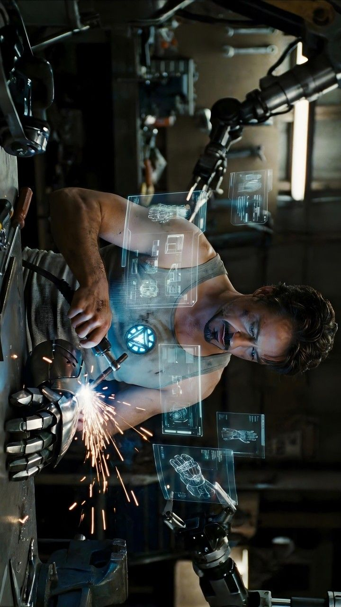
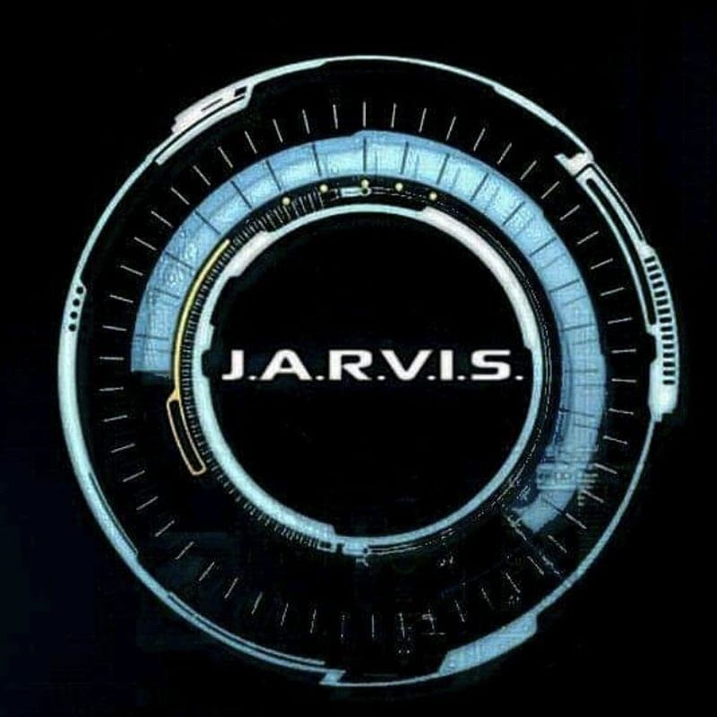
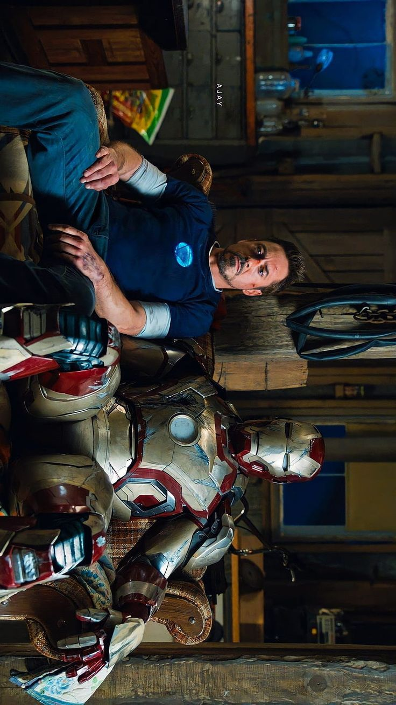
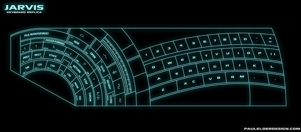
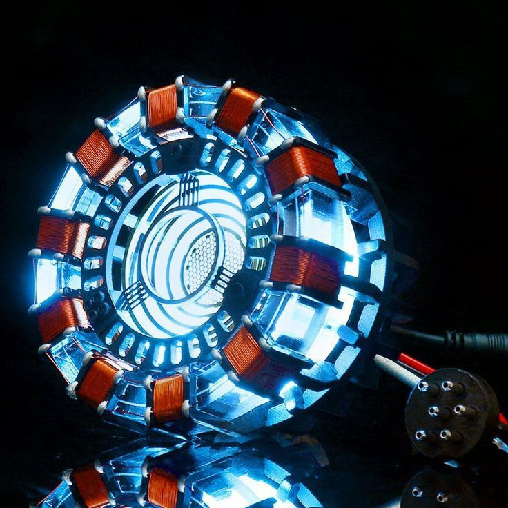

Tony Stark, also known as "Iron Man" is a fictional marvel superhero. He is known for his genius intellect, technological innovations, and his iconic Iron Man armor.
He is also known for his charismatic personality, his love for technology, and his role as a founding member of the Avengers.
His story is one of transformation, from a wealthy industrialist to a hero who uses his intellect and resources to protect the world.
Throughout his journey, Tony Stark has faced numerous challenges, but his ingenuity and determination have always allowed him to overcome them and continue his mission to protect the world.
His legacy extends beyond his technological achievements, as he has inspired countless individuals with his vision, leadershhip, and charisma.
His impact on the world of technology and superhero culture is undeniable, making him one of the most iconic figures in modern media.
Even after his passing, Tony Stark's influence continues to resonate, reminding us of the power of innovation, leadership, and the enduring spirit of heroism.
His story serves as a testament to the potential of human ingenuity and the importance of using one's talents to make a difference.
Ultimately, Tony Stark's legacy is one of inspiration, reminding us that with creativity, determination, and a commitment to making a difference, we can achieve greatness.
In conclusion, Tony Stark's story is powerful and inspiring.

Tony Stark's impact on the tech world is profound, influencing countless innovations and inspiring future generations of engineers and programmers.
His contributions to technology have not only advanced the field but also set new standards for innovation of programing engineering.
His legacy in the tech world is marked by a commitment to pushing the boundaries of what is possible, inspiring others to pursue their own innovations with passion and determination.
His influence extends beyond his own inventions, shaping the way we think about technology and its potential to transform the world.
His impact on the tech world is a testament to the power of innovation and human ingenuity.

J.A.R.V.I.S is an artificial intelligence created by Tony Stark to assist him with his technological innovations.
He plays a crucial role in managing Tony's suits and providing real-time support.
J.A.R.V.I.S stands for Just A Rather Very Intelligent System.
He is known for his witty personality and his ability to provide valuable insights and assistance to Tony Stark.
Jarvis has been a huge inspiration to many people in the tech field. Lots of developers and engineers have been inspired by his capabilities.
His influence inspired developers to create their own versions of Jarvis in their own computers.
Jarvis inspired many people all over social media even non-developers to create their own Jarvis A.i.

While Tony is an engineer and billionaire, he is also Iron Man on the side.
His Iron Man suit is a marvel of engineering, equipped with advanced technology and designed to protect him while allowing him to perform extraordinary feats.
The suit is not only a symbol of Tony's wealth and technological prowess but also a testament to his ingenuity and commitment to protecting the world.
Throughout his journey as Iron Man, Tony has used the suit to defend the world from various threats, showcasing his bravery and resourcefulness.
The Iron Man suit has become an iconic symbol of Tony Stark's legacy, representing his blend of human ingenuity and technological innovation.
The suit also serves as a reminder of Tony's personal journey, from a wealthy industrialist to a hero who uses his intellect and resources for the greater good.
Ultimately, the Iron Man suit embodies Tony Stark's spirit of innovation, resilience, and dedication to making a positive impact on the world.

Something intresting about tonys keyboard is how unique each key is. Tonys Keyboard is made up of a mix of Mayan hierglyphs and ancient numerology combined with electrical engineering and schematic symbols. Its a one of a kind macro input device designed by Tony himself to speed up his complex engineering work with J.A.R.V.I.S.

The Arc Reactor is a compact fusion reactor that provides Tony Stark with a nearly limitless
source of clean energy.It powers his Iron Man suit and other advanced technologies,
making it an essential part of his arsenal.The Arc Reactor is also what keeps Tony alive posing as his heart.
It serves as the literal and figurative heart of the iron man franchise.
Tony Stark's glasses arn't just a fashion statement but they are also a signature part of his identity.
His glasses are like no other pair, he created them himself with its own A.i built inside. Also known as, E.D.I.T.H.
These glasses not only enhance his vision but also provide him with advanced technological capabilities, making them an integral part of his Iron Man Persona.
Tony Stark's glasses are
Tony Stark is a brilliant inventor, engineer, and businessman known for his creation of the Iron Man suit and his contributions to advanced technology. He is a central figure in the Marvel Cinematic Universe, recognized for his intelligence, charisma, and complex personality.
Throughout his journey, Tony Stark evolves from a self-centered industrialist into a selfless hero willing to sacrifice himself to protect the universe.
His legacy is marked by his technological innovations, his role in the Avengers, and his enduring impact on the Marvel Cinematic Universe.